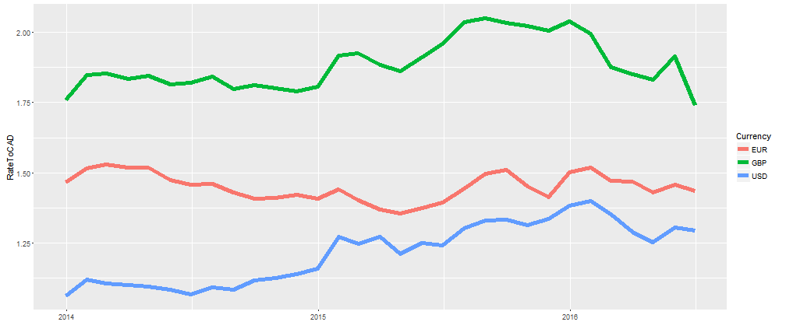
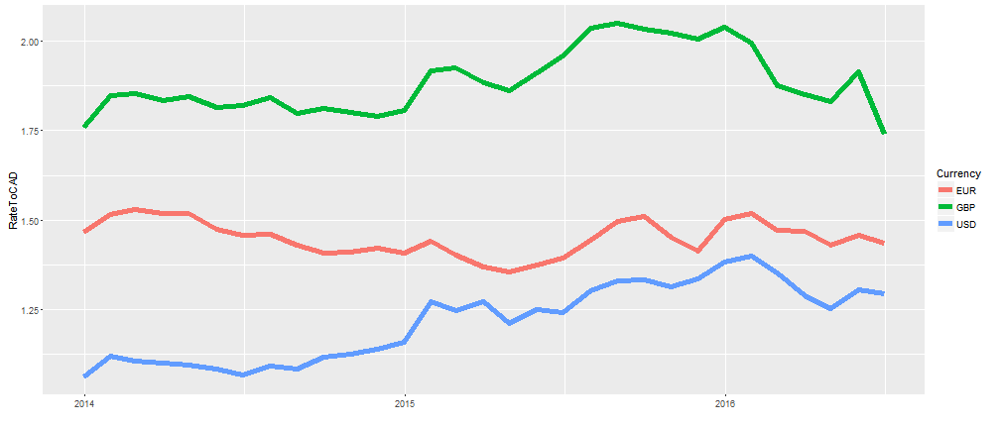
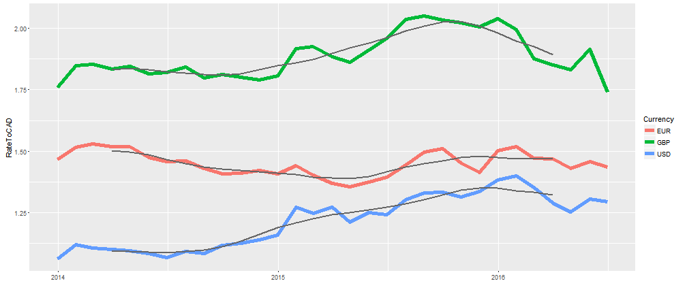

This app displays the past 2.5 years of exchange rates to the Canadian dollar from the Euro, Great Britain Pound and US dollar as shown here.

Graeme
This app displays the past 2.5 years of exchange rates to the Canadian dollar from the Euro, Great Britain Pound and US dollar as shown here.

An option to display a trendline is available to the user to get a better visual of what the trend over the last 2.5 years was. This helps the user get a better idea of the long term trend of the exchange rate as shown here.

A moving average option is also included. The user can change the window of the moving average from 2 months to 7 months. This allows the user to get a sense of moving trends rather than the overall trend. A 6 month moving average trend is shown here.

A 6 month forecast option is also available to the user. This allows the user to view what a very basic 6 month forecast for each exchange rate looks like. This might help the user decide if it a good time to buy or sell a specific currency. (Note that the forecast is very basic and should not be used)